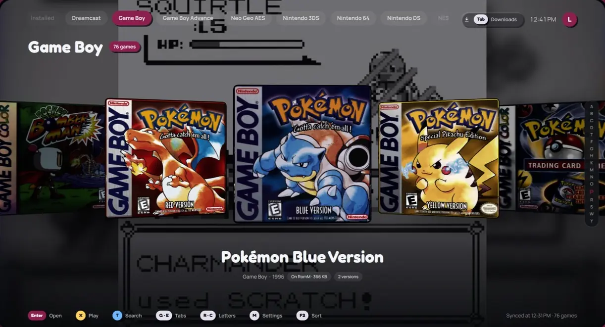

Your RomM library, played from the couch.
Borne is a launcher you drive with a gamepad. Pick a game: it downloads it, sets up the right emulator and keeps each player's saves on your RomM server. Then it gets out of the way.
Free and open source. Linux x86_64 (ChimeraOS, SteamOS, any desktop) and macOS on Apple Silicon.

How it works
Connect your server
Type your RomM address with the on-screen keyboard. Borne talks only to it, to ScreenScraper for images and to GitHub for updates.
Say who's playing
Each profile is bound to a RomM account. Approve the pairing from your phone with a code or a QR code.
Pick a game
Browse by console, favourites or recently played, or start typing to search. Each game stands as a real case you can turn to read its spine.
Play
Borne downloads the game, or plays it straight from the network on Linux, starts the right emulator already configured, and sends your saves back to RomM after.
What Borne takes care of
- Emulators
- One per console, chosen in Settings: RetroArch cores, Dolphin, PCSX2, DuckStation, melonDS, RPCS3, shadPS4 and more, fetched from their official sources and kept up to date.
- Saves
- Kept on RomM for each profile: fetched before a game when newer, sent after it, replaced copies archived. Profiles never share saves.
- Per-game settings
- Another emulator for one game, its options (rewind, widescreen, CPU speed), picture shape and filters, cheats, language, cover.
- Downloads
- Resumed after an interruption and checked with SHA-1, with pause, cancel and a list you can clear.
- Cases and videos
- 3D boxes in each console's shape, drawn from ScreenScraper's scans, with a video of the selected game behind them.
- System files
- BIOS, keys and firmware taken from RomM or given by you, checked and placed for each emulator. Borne never downloads them itself.
- Offline
- Your library stays browsable without the server, and installed games play without it.
- Plain settings
- Every option says what it does. In English and French, following your system.
Updates that only fetch what changed
Borne comes in three parts: its programs, its interface and the Qt runtime. An update downloads only the parts that changed, checks each against its SHA-256 and keeps the previous version aside. It asks before installing and never interrupts a game.
Install
Linux
tar xzf Borne-linux-x86_64.tar.gz
./Borne/install.shBorne goes to ~/.local/opt/Borne with a menu entry. On ChimeraOS or SteamOS, add it to Steam as a non-Steam game to start it from the gamepad interface.
macOS
Unzip Borne-macos-arm64.zip and move Borne.app to Applications. The app is not notarized: the first time, right-click it and choose Open.
Either way, you need a RomM server on your network.
Controls
A gamepad or a keyboard. The hints on screen show the buttons of the one in use.
| Gamepad | Keyboard | Action |
|---|---|---|
| A | Enter | Open, choose |
| B | Esc | Back |
| X | X | Play |
| Y | Any letter | Search |
| LB RB | Q E | Previous or next tab |
| R stick | W A S D | Turn the case |
| Start | M | Settings |
| Select then Start | The emulator's key | Quit the game |